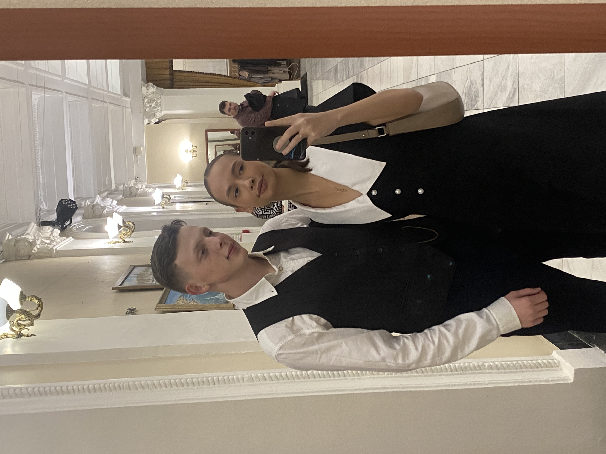

«Ты — моё любимое место»
«Твои объятия — мой дом»
«Каждый закат с тобой становится красивее»

«Ты смотришь — и внутри всё тает»

«Я бы пережил все эти моменты ещё тысячу раз»

«Люблю тебя в каждом моменте»